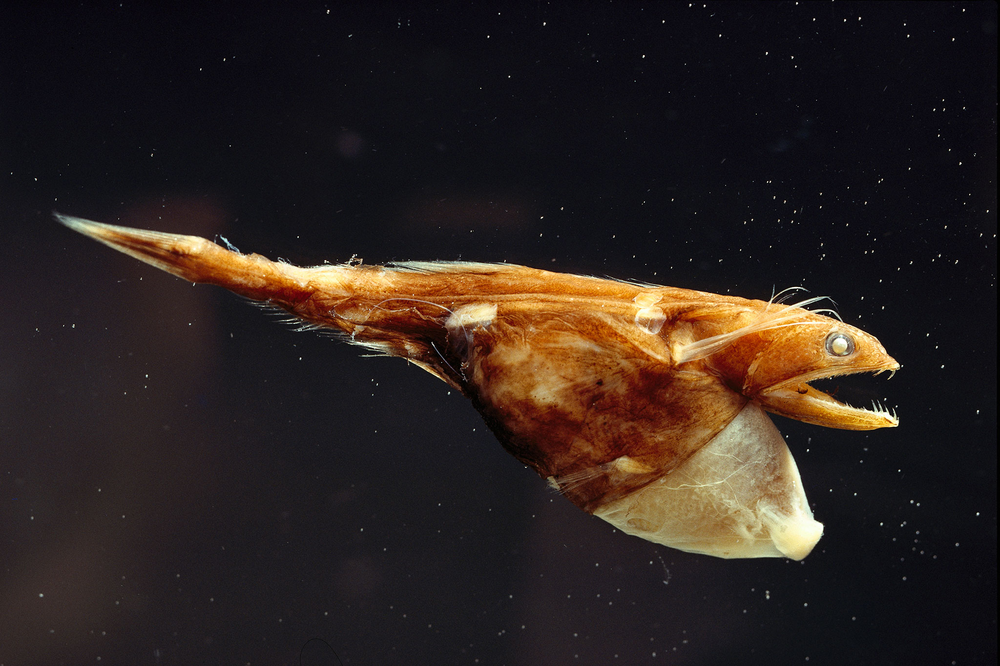
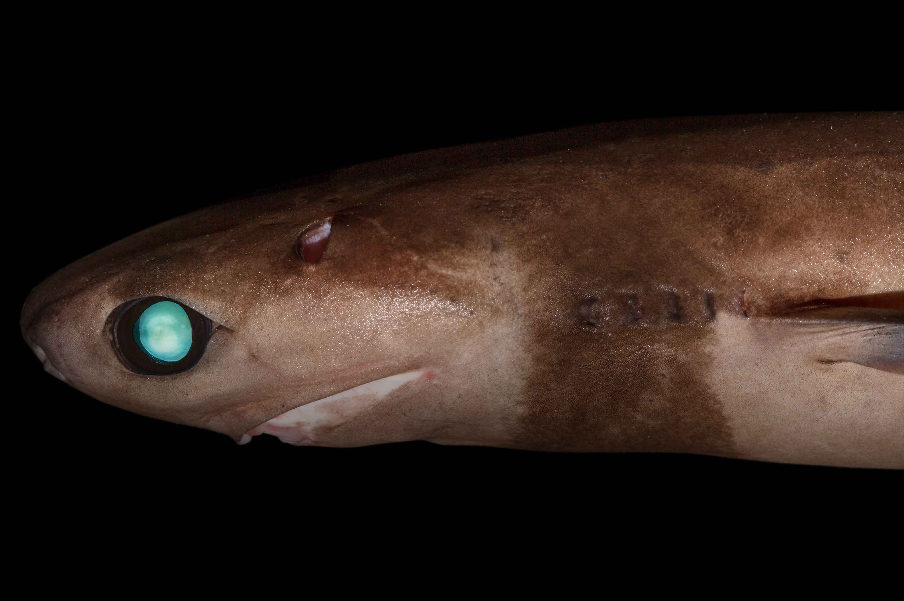

The Midnight Zone
Then their is the third Oceanic Zone the Midnight Zone (or Bathypelagic Zone) which extends down to 13,000 feet (4,000 meters). Here the native animals face challenges surviving with a lack of light and food such as plankton which are pivitol to the upper zones food chains. Together this creates a challenging balence of hunting and conserving energy.
Doubleclick this text to learn the imporance of energy conservation to deep sea life.
 